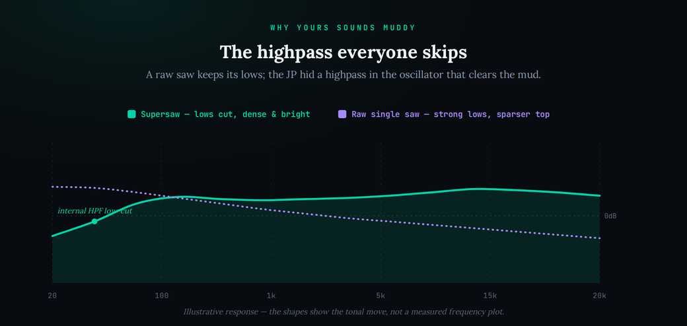
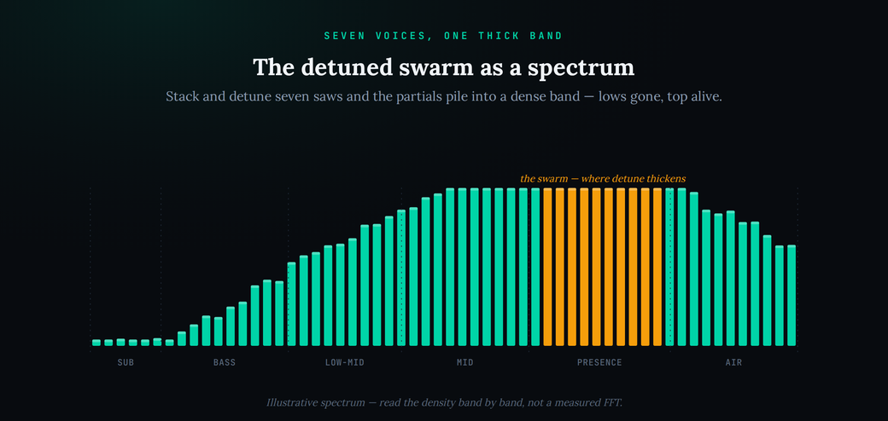

The supersaw is the sound of a generation of dance music — the huge, shimmering, detuned lead that built trance and never really left, turning up now in future bass, hardstyle, hyperpop and pop. It is also one of the most mythologised sounds in synthesis. For the better part of two decades, producers and even DSP engineers argued over what was really happening inside Roland’s oscillator: secret chorus, hidden modulation, some proprietary phase trick. At the end of 2025 a team reverse-engineered the actual chip and settled it, and the answer is almost disappointingly plain — seven detuned sawtooth waves, a highpass filter, and some oversampling. No magic. This guide separates what the supersaw genuinely is from what the internet keeps repeating, then walks you through rebuilding it from a stock synth first — with the dedicated JP-8000 clones named only because they are real and confirmable.
The supersaw is not a chorus on a saw and it is not a secret effect. It is seven detuned saw waves from a single oscillator, run through a highpass filter and rendered at a doubled sample rate (about 88.2 kHz) to tame aliasing. To rebuild it in any synth: load a saw, turn unison up to seven or more voices, raise the detune narrow at first (push it and you gain width but lose power), highpass the low mud (the step most recreations skip), and turn on free-running phase so each note shimmers differently. The free Vital does all of this; the dedicated shortcuts are Arturia’s Jup-8000 V and the free, chip-accurate JE-8086 (which needs your own ROM).
The supersaw is a waveform Roland created for the JP-8000 (released 1996–97; sources differ on the exact date) and the rackmount JP-8080 (1998). Reverse-engineering of the original Toshiba DSP chip showed the supersaw to be seven detuned sawtooth waves from one oscillator, passed through a highpass filter and oversampled to about 88.2 kHz to suppress aliasing — in the developer’s own words, “no modulation, no phase tricks, no chorus, no magic.” Two performance controls shape it: Detune (spreads the six side saws) and Mix (level of the side voices against the fundamental), with free-running oscillators that don’t reset phase on each key press. Darude’s “Sandstorm” used the JP-8080 and is named after its boot-up patch. Sources: Wikipedia “Roland JP-8000”; Perfect Circuit “Super Saws: History…”; Kulshan Studios; and giulioz’s 39C3 Chaos Computer Club talk “From Silicon to Darude Sand Storm,” reported by gearnews and Synth Anatomy (Jan 2026).
That the supersaw hides secret chorus, modulation, or phase magic. For years the standard forum theories ranged from comb filters and comparators to LFO-modulated phase offsets, and the usual home shortcut is “just slap a chorus on a saw.” The chip teardown shows all of that is wrong: it is only detuned saws + highpass + oversampling. So a chorus misses the actual mechanism — the character is the highpass, the narrow non-linear detune, the free-running phase, and controlled aliasing, not an effect. Source: the long-running KVR “Roland Supersaw — how was the original done?” DSP thread (2009–2017), resolved by the 2025–26 teardown.
The exact detune curve. It is known to be non-linear and asymmetric — the side saws are not spread evenly — and academic reconstructions exist, most notably Adam Szabo’s thesis How to Emulate the Super Saw, which fits a curve to sampled measurements and states plainly that “the detune curve cannot be linear.” Treat any specific detune coefficients as modeled reconstructions, not Roland’s published values. Source: Adam Szabo, How to Emulate the Super Saw (Bachelor thesis, PDF); corroborating empirical coefficient sets discussed on KVR.
It isn’t a chorus on a saw wave
Start here, because the wrong mental model is the single reason most supersaw recreations sound thin. The shortcut everyone reaches for is “take a saw, add a chorus, done” — and it gets you something vaguely wide and wobbly that is not the supersaw. A chorus takes one signal and smears copies of it with short, modulated delays; it creates movement, but it is one voice pretending to be many. The supersaw is the opposite: it is seven genuinely separate saw voices, each at a slightly different pitch, summed together and then cleaned up with a highpass. The density you hear — that thick, buzzing curtain of sound — comes from seven real oscillators beating against each other, not from a delay line modulating one.
The distinction matters because it changes every decision downstream. Once you stop thinking “effect on a saw” and start thinking “a stack of detuned saws, filtered,” the settings that actually make the sound fall into place, and the settings that produce the weak imitation stop tempting you. You reach for unison and detune instead of a chorus plugin; you remember to highpass; you leave the phase free-running. The producers who nail the supersaw are the ones who understand it as an oscillator, not as a processed single tone.
It helps to know how thoroughly this was argued over, because it tells you how little you can trust the folklore. On DSP forums, engineers spent years reverse-guessing the algorithm — theories included comparator-based phase-shifted saws driven by LFOs, two-dimensional wavetable lookups with random sweeps, and nonlinear filtering, all clever, all wrong. The people building emulations couldn’t agree either. Then, at the end of 2025, a team that had already reverse-engineered several Roland chips took apart the JP-8000’s actual DSP and published the answer. The reason it stayed a mystery so long is that the truth is almost too simple to believe: seven naive saws, a highpass, and oversampling to keep the aliasing musical. As the developer put it, no modulation, no phase tricks, no chorus, no magic. Everything else was people over-thinking a stack of detuned saws.
There is one more reason the supersaw sounds the way it does, and it is the detail that makes a clean modern recreation subtly miss: aliasing. Any digitally generated saw produces aliasing — unwanted frequencies that fold back down into the audible range — and most synth designers treat it as a defect to be filtered away. Roland did the opposite. By running the supersaw at a doubled sample rate they kept the aliasing under control without eliminating it, and that faint digital grit is part of what gives the sound its bright, airy shimmer. Szabo’s analysis makes the same point: the aliasing that other synths scrub out is exactly what lends the supersaw its brightness. It is why a spotless, heavily anti-aliased modern saw can sound a touch too clean next to the original — and why a hair of saturation often puts the life back.
So the reframe, in one sentence: the supersaw is a detuned saw stack that has been highpassed and oversampled, and its magic lives in the filter, the shape of the detune, and the free-running phase — not in any effect you can add afterward. Hold that in your head and the rest of this guide is just detail.
The five ingredients that actually make the sound
Break the supersaw into its load-bearing parts and it stops being mysterious. There are five, and every one is a place a recreation goes wrong. Get all five and even a free stock synth lands it; miss any one and you get a recognisable-but-wrong imitation. Here they are, roughly in order of how badly people underdo them.
1. Seven detuned saws from one source. The foundation is a single saw waveform stacked in unison — the original used seven voices, one centre saw kept in tune with six detuned around it. Seven unison saws with no detuning just sound like a louder saw; the stacking is only the raw material. What you need first is a synth that can produce enough unison voices, because this has a real consequence for chords: seven voices per note means a three-note chord wants around twenty-one voices. Many synths cap their unison count or get expensive on CPU there, so if yours only reaches seven or eight voices total, keep supersaw patches monophonic and layer them — or reach for a synth with generous unison. This is exactly the kind of decision our best synth plugins roundup exists to sort out.
2. Narrow, non-linear detune — and knowing when to stop. Detune is where the supersaw comes alive, and it is where most people overshoot. Push the detune up from zero and the seven voices gradually drift apart, filling the space between them with that thick, pleasing fuzz that almost seems to modulate on its own. But there is a cost: the more you detune, the further you spread the voices, and past a certain point you gain width while losing power and density. The original supersaw stuck to a fairly narrow detune unless you pushed the fader near its maximum, and the detune curve itself is deliberately non-linear — it moves slowly at first and steepens later, giving fine control over the subtle pad-like settings. The practical rule: detune just until you can start to hear the separate saws smear together, then back off a touch. For punchy leads you want less detune than instinct suggests; for lush pads you can spread wider.
3. The internal highpass — the ingredient nobody talks about. This is the single most-skipped step, and it is why so many stock recreations sound muddy and weak next to the real thing. The JP-8000 hid a highpass filter inside the supersaw oscillator, rolling off the low end so the stacked saws didn’t pile into a woolly mess. Seven detuned saws stack a lot of low-frequency energy, and left alone that energy turns to mud; the highpass clears it, which is exactly why the raw supersaw sounds a touch thinner and brighter than a plain saw straight out of the box. If your supersaw sounds thick-but-lifeless, this is almost always the missing move: highpass it around the fundamental and the patch snaps into focus. We will look at this as a picture in a moment, because it is the fix that fixes the most recreations.
4. Free-running phase. Here is the ingredient that gives the supersaw its organic, breathing quality, and it is a single switch. On most synths, every voice resets to the same starting point in the waveform each time you press a key, so every note begins identically. The JP-8000’s oscillators were free-running — they never reset phase — so each note started at a slightly different point in the cycle, and the seven detuned voices lined up differently every time. That is the subtle per-note shimmer that makes the real thing feel alive rather than static. In modern synths the feature has various names — free phase, random phase, phase reset off — but the effect is the same: turn off phase reset and add a little phase randomisation, and your supersaw stops sounding like a machine repeating one note and starts sounding like it was played.
5. Mix and controlled air. The last ingredient is balance. The JP-8000’s Mix control set the level of the six detuned side voices against the in-tune fundamental, letting you dial anywhere from a sizzling, spaced-out waviness to a buzzing, in-your-face swarm of power. Keeping the centre saw prominent gives you focus and pitch; leaning on the detuned voices gives you size and drama. The other half of “air” is the oversampling: the original ran the supersaw at double the normal sample rate specifically so its aliasing stayed musical rather than harsh — the slight digital grit is part of the brightness, not a flaw to remove. Modern synths tend to anti-alias aggressively, so you sometimes have to add a touch of that brightness back with saturation or presence to keep the top alive.
The highpass everyone skips, seen as a curve
Because the highpass is the ingredient that fixes the most broken recreations, it is worth seeing rather than just reading. A plain saw wave carries strong low-frequency energy and a harmonic series that rolls off gently as frequency rises. Stack seven of them detuned and that low energy multiplies into mud. The supersaw’s internal highpass clears the bottom and leaves a bright, dense band up top — which is why the finished sound cuts through a mix instead of clogging it.

Reading the shape tells you exactly what to do in your own synth. If your supersaw looks and sounds like the purple curve — big and woolly at the bottom, dull up top — you have skipped the highpass. Add a highpass around the fundamental of the note range you are playing and roll off just enough to clear the mud without hollowing the sound out. The goal is the teal curve: lows under control, mids and highs alive. This one move is the difference between a supersaw that sits proudly in a busy arrangement and one that turns everything to porridge the moment you add a bassline under it.
It is worth understanding why the lows pile up, because then the fix stops feeling arbitrary. A single saw already carries strong low-frequency content. Stack seven of them at slightly different pitches and those low components don’t cancel — they reinforce and beat against each other, building a thick, rumbling foundation that has nothing to do with the bright detuned character you actually want. Left in, that build-up eats headroom and masks your bass. The highpass simply removes the part of the sound that was never doing any useful work, which is why cutting it makes the supersaw feel louder and clearer even though you took energy away.
Seven voices, one thick band
The other half of the supersaw’s character is density, and density is easiest to understand as where the energy sits. When you stack and detune seven saws, their partials don’t stay neatly separated — they crowd together into a dense, shimmering band, thickest through the mids and presence region and carried up into the air by the oversampling. That crowding is the “swarm,” the sense of many voices moving at once, and it is what a single saw or a chorus can never quite fake.

This picture also explains the detune trade-off from the other direction. Detune the voices a little and the swarm is tight and powerful. Detune them a lot and the band spreads wider — broader stereo image, more obvious movement — but the energy thins as it stretches, and past a point the powerful centre hollows out. That is the audible version of “you gain width but lose power.” When you are dialling detune, you are really deciding how tightly this swarm holds together: narrow for a punchy lead that hits hard, wider for a lush pad that washes over the track.
Recreate it: stock synth first, then the shortcut
You do not need to buy anything to make a great supersaw, and building it from a stock synth first is the fastest way to actually understand it. Almost any synth with a saw oscillator, enough unison voices, a highpass, and free-running phase will do it, and the completely free Vital covers all four — which is why it is the honest starting point for anyone on any budget, and our best free VST plugins roundup lists it alongside the other free synths worth grabbing. Here is the whole recipe, with the settings that matter and, more importantly, why each one is set the way it is. Treat exact numbers as starting points and tune by ear.
Start with a saw oscillator and turn unison up to at least seven voices. Play a single note: right now it should just sound like a slightly louder, thicker saw, because the voices are all in tune. Now raise the detune slowly. Somewhere in the lower half of the control you will hear the voices start to smear apart into that shimmering fuzz — that is the supersaw arriving. Keep it narrow for a punchy lead and only push it wide if you specifically want a broad, washy pad; remember that past a point you are trading power for width. Next, and this is the step that separates a good recreation from a muddy one, highpass the low end — use the synth’s built-in filter or a simple EQ, and roll off the mud around the fundamental until the patch tightens up and brightens. Then turn on free-running or random phase so every note starts differently and the sound breathes. Finally, balance the detuned voices against the centre with the mix or level, keep the top bright, and if it sounds too clean and static compared to the records in your head, add a whisper of saturation for the aliasing-style air the original had built in.
That is the entire sound: seven saws, detuned narrow, highpassed, free-running, mixed to taste. Everything beyond that — stacking multiple unison sets for an even bigger modern lead, adding a filter LFO for movement, a trance gate, generous reverb — is a modern extension, not the original. Those extensions are how the supersaw grew from a trance lead into the wall-of-sound found in future bass, and it is worth knowing which parts are the real oscillator and which parts are the era’s production stacked on top. When you want that maximal modern size, our guide to layering synths covers stacking sets cleanly without turning the low end back into mush.
One honest note on the “bigger is better” instinct: the enormous modern supersaw you hear on festival records is usually several seven-voice stacks layered and spread, not one oscillator pushed harder. That is a legitimate production choice, but it multiplies your voice count fast — a couple of stacked supersaws playing chords can run into dozens of voices — so it is worth reaching for a synth with efficient unison like Vital rather than choking your CPU. And every layer you add makes the highpass discipline more important, not less: more stacks means more low-end build-up to clear. Build one clean, controlled supersaw first; only then start stacking.
If you would rather buy a shortcut, there are two worth naming because they are confirmable, and one important caveat. Arturia’s Jup-8000 V is the easy buyable route: Arturia state they reverse-engineered the circuitry of the original JP-8000, it recreates all seven oscillator modes including the supersaw, and it usually sells for around $149 (often less on sale). The more extreme option is The Usual Suspects’ JE-8086, which is free and emulates the JP-8000/8080 at the chip level — the most accurate recreation available — but it is not a plug-and-play purchase: it requires you to supply a legally-owned original ROM, which is a genuine hurdle and not something we can help you around. For a finished record, honestly, a stock supersaw in Vital or Serum is perceptually indistinguishable to almost any listener; the clones matter more for authenticity and study than for the mix.
![A decision router matching what you want to which synth. Top row (teal): want it free and stock, any synth with a saw plus seven unison voices plus a highpass, output Vital free. Middle row (purple): want the dedicated clone, a reverse-engineered JP-8000 circuit with presets, output Arturia Jup-8000 V. Bottom row (amber): want the actual chip, bit-accurate DSP but needs your own ROM, output JE-8086 free with ROM. Caption notes stock first: Vital nails the sound; the clones are shortcuts and JE-8086 needs a legally-owned ROM.](../images/how-to-recreate-the-supersaw-route-m.png)
Beyond trance: the same move anywhere
The reason it is worth learning the supersaw as a principle rather than a preset is that the move — detuned unison, highpassed, free-running — is a general sound-design tool, not a one-genre trick. The same stack of detuned saws that built trance leads is the backbone of trance, but it is also the enormous, pitch-bent lead in future bass, the aggressive riff in hardstyle, the bright chord stack in a lot of modern pop, and the screaming build-up in mainstage EDM. Once you can build a supersaw from scratch, you can shape it to any of those simply by changing how much you detune, how hard you highpass, and what you stack on top.
The principle generalises even further than saws. Detuned unison is what makes a Reese bass growl in drum & bass; it is what thickens a pluck into a wall; it is what turns a thin square lead into something huge. The three ideas underneath the supersaw — stack voices, detune them without overspreading, and filter the resulting mud — apply to almost any waveform you want to make big and alive. That is the difference between having recreated one famous sound and having learned a move you can point at anything. And when you drop a supersaw into a track, the same understanding tells you how to make it land: a big detuned lead is a build-and-release instrument, which is exactly what our guide to building tension and drops is about — filter it closed through the build, throw the highpass and detune wide open on the drop, and the swarm does the heavy lifting.
What you can’t perfectly clone — and why it doesn’t matter
Honesty is the point of this category, so here is the part no plugin ad will tell you: you cannot make a bit-perfect copy of the original in a generic stock synth, and knowing precisely where that limit is will stop you chasing it forever. What you can do is get the perceptual result — the sound — completely. The gap is smaller than the marketing implies and, for a finished record, it is inaudible.
Two things are genuinely hard to reproduce exactly. The first is the JP-8000’s precise non-linear detune curve — the specific, asymmetric way it spreads its six side saws. It has been measured and modeled (Szabo’s thesis is the best-known attempt), but it is a reconstruction, not Roland’s published numbers, and a generic unison detune won’t match it coefficient-for-coefficient. The second is the exact character of its oversampled aliasing — the particular digital grit the original chip produced, which most modern synths deliberately filter away in the name of cleanliness. Those two details are the entire reason chip-accurate clones like the JE-8086 exist, and if perfect authenticity is your goal, that is where to get it.
But for the overwhelming majority of uses, none of that is the difference between a good record and a bad one. The audible supersaw — the density, the shimmer, the bright detuned swarm — is fully reachable in a free stock synth, and no listener will ever tell your Vital supersaw from a JP-8000 in the context of a mix. Put plainly: you can absolutely nail the sound; you just can’t clone the exact silicon — and for a track, you don’t need to. Chase the technique to the end; don’t lose a weekend hunting for the last one percent that no one but you will ever hear.
Do you need to clear anything?
No. Building a supersaw patch in your own synth — stock or bought — is entirely your own production. There is nothing to clear and no rights question to worry about, because you are recreating a synthesis technique, not sampling a recording. The moment you dial in your own oscillator, detune, and filter, the sound is yours to use in anything. (A rights conversation would only arrive if you sampled an actual record that used the supersaw — a completely different task, and not what this is.) Build it freely and put it in whatever you like.
Build the skill: 3 drills
Run these in order. The first proves the supersaw is a filtered saw stack and nothing exotic; the second trains your ear on the detune trade-off; the third makes you confront the highpass so it becomes automatic.
- Open Vital (or any synth), load a saw oscillator, and turn unison up to seven voices. Play a note — it should sound like a thick saw, not yet a supersaw.
- Slowly raise the detune until the voices smear into a shimmering fuzz, then stop the moment it starts to lose punch. You have just built the core of the sound.
- Turn on free-running or random phase and play a few notes in a row. Notice how each note now shimmers a little differently — that is the organic feel of the original.
- Keep the patch from drill one. Set detune very narrow and play a lead line — note how focused and powerful it feels.
- Raise the detune in stages, playing the same line each time, until it is very wide. Hear the sound get broader and more washy but lose its punchy centre.
- Find the setting where it is as wide as possible while still hitting hard. That balance point is the single most useful supersaw dial you own — narrow for leads, wide for pads.
- Drop your supersaw into a busy loop with a bassline. With no highpass, listen to how it clogs the low end and fights the bass.
- Add a highpass and roll off the lows around the fundamental. Hear the whole mix open up as the mud clears and the supersaw brightens.
- Bypass and re-engage the highpass a few times so the fix is burned into your ear. From now on, reaching for the highpass on a supersaw should feel automatic.
The mistakes that make it sound wrong
Nearly every failed supersaw is one of a handful of specific errors, and naming them turns troubleshooting from guesswork into a checklist. If yours is not landing, it is almost certainly one of these.
Skipping the highpass is the number-one culprit — the stacked saws pile up low-frequency mud and the whole thing sounds thick and lifeless; roll off the lows and it snaps into focus. Over-detuning is second: spread the voices too far and you trade the powerful centre for hollow width, so keep it narrower than instinct suggests for leads. Reaching for a chorus instead of real unison is third — it fakes the movement but never the density of seven genuine voices, and it reintroduces the very modulation the real oscillator avoids. Leaving phase reset on makes every note identical and robotic, when free-running phase is what gives the original its life. And scrubbing all the brightness away in the name of a clean sound strips the airy grit that made the JP-8000 cut — keep the top alive, and add a little saturation back if your synth anti-aliases it out. Run down that list and you will usually find the one setting standing between you and the sound.
Frequently Asked Questions
Seven detuned sawtooth waves running from a single oscillator, passed through a highpass filter and rendered at a doubled sample rate (about 88.2 kHz) to suppress aliasing. That is the whole thing. When the team that reverse-engineered the JP-8000 chip described it, their summary was blunt: no modulation, no phase tricks, no chorus, no magic. The character comes from the highpass, the narrow non-linear detune, the free-running phase, and the aliasing the oversampling controls — not from a hidden effect.
No. Any synth that can stack at least seven detuned unison saw voices and highpass them will do it, and the free Vital covers all of that. Serum, Serum 2, Sylenth1 and Spire do it trivially too. The dedicated JP-8000 clones — Arturia’s Jup-8000 V, or the free chip-accurate JE-8086 — get you closer to the exact original, but they are a shortcut, not a requirement.
Almost always because you skipped the highpass. Stacking seven detuned saws piles up low-frequency energy that turns to mud, and the JP-8000 hid a highpass inside the oscillator to clear exactly that. Roll off the lows around the fundamental and the patch snaps from thick-and-woolly to bright-and-defined. The second common cause is over-detuning: past a point the voices spread so far that the sound loses power and density.
Start narrow. The original kept the detune fairly tight unless the fader was pushed near maximum, because the more you spread the voices the more width you gain but the more power and density you lose. Raise the detune just until you can start to hear the separate saws smear together into that shimmering fuzz, then back off a touch. For punchy leads you want less detune than you think; for lush pads you can push it wider.
No, and that shortcut is why so many recreations fall short. A chorus smears one saw with modulated delay; the supersaw is seven separate detuned saws summed and highpassed, with free-running phase so every note is slightly different. A chorus can sound superficially similar but it does not have the density of seven real voices or the organic per-note variation, and it reintroduces the modulation the real oscillator specifically does not use.
The classic supersaw is seven voices per note, so a three-note chord needs around twenty-one voices. Many synths cap their unison count or get expensive on CPU, so if you can only reach seven or eight voices total, keep supersaw patches monophonic and layer them, or use a synth with generous unison like Vital or Serum. Some synths also let you build multiple unison “sets” to play polyphonically.
For a bit-accurate original, the free JE-8086 by The Usual Suspects emulates the JP-8000/8080 at the chip level — but it requires you to supply a legally-owned ROM, which is a real hurdle. Arturia’s Jup-8000 V reverse-engineered the original circuitry and is the easiest buyable route, around $149. For a mix, though, a stock supersaw in Vital or Serum is perceptually indistinguishable to almost any listener; the clones matter more for authenticity than for the finished record.
No. If you built the patch yourself in your own synth, the sound is entirely your own production — there is nothing to clear. Recreating a synthesis technique is not sampling a recording. A rights question would only arise if you sampled an actual record that used the sound, which is a different task and not what recreating the supersaw involves.